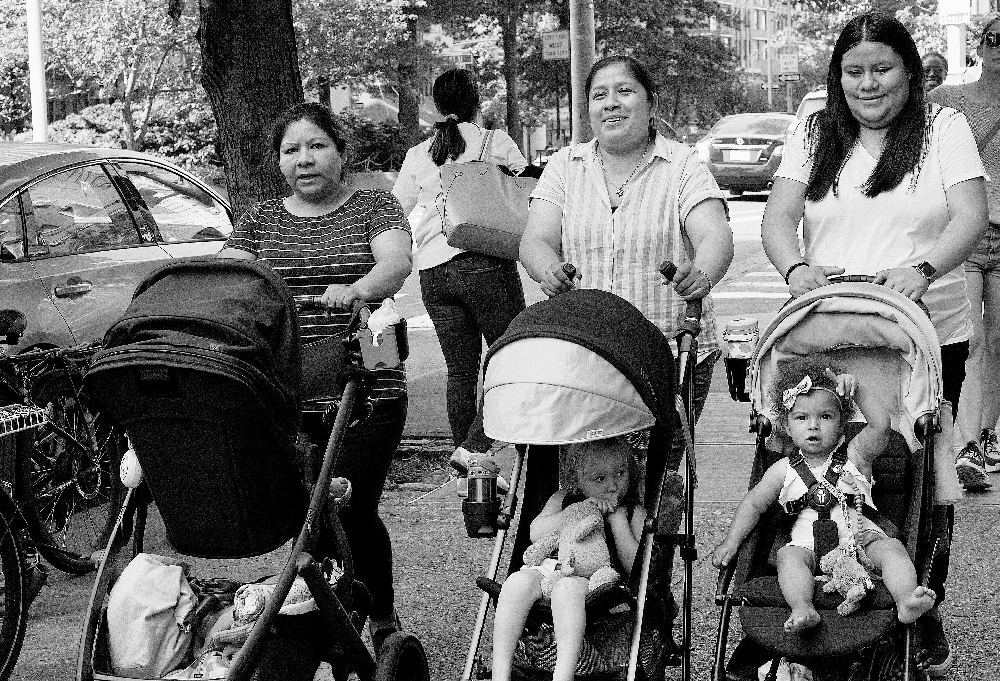
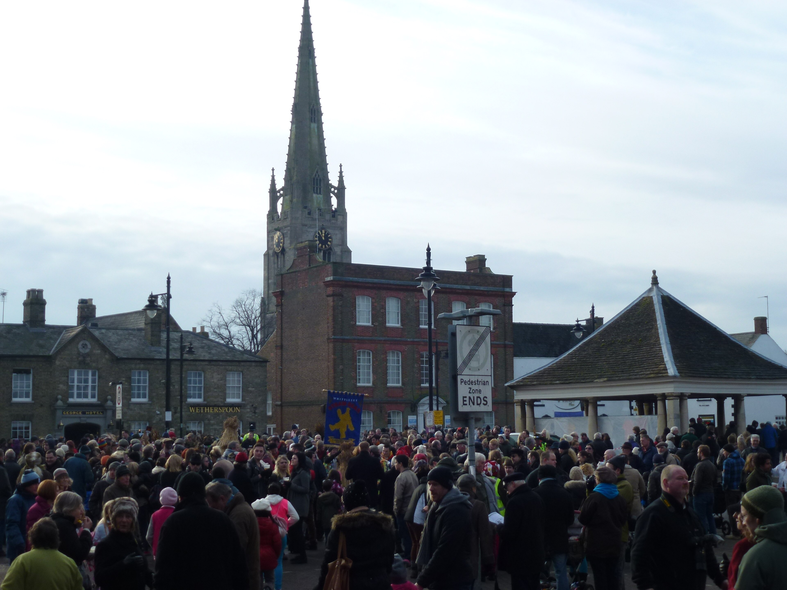
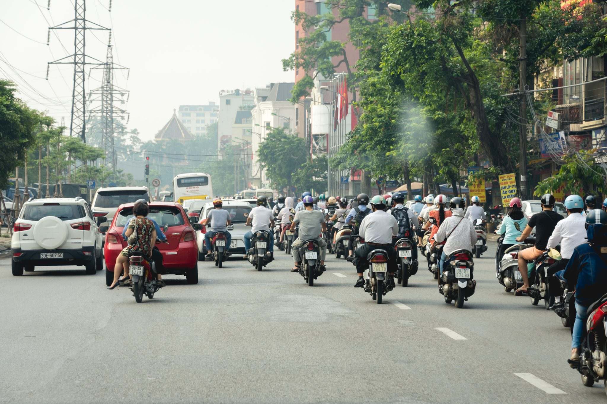
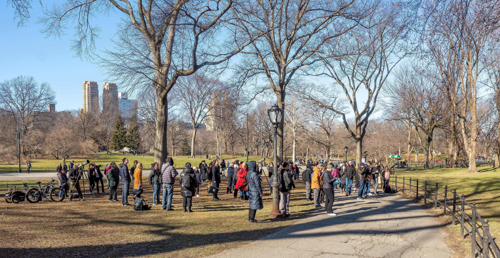

Layer 02 · Desire
Streets
A map drawn by feet, redrawn every morning.
Scroll

01
Desire lines
The shortest path
is a footprint
Planners draw the avenues. People draw the shortcuts. Where the two disagree, grass dies and the real city appears, one worn diagonal at a time.
Photo · 0x010C
Desire


02
Noise
Ten thousand
conversations, one sentence
Listen to a street long enough and it says the same thing over and over: I am here, I am here, I am here. That chorus is the pavement's heartbeat.
Photo · Benjamin Arnold

03
Markets
Everything for sale
except the corner
You can buy the fruit, the phone, the promise of a taxi. You cannot buy the corner itself. The corner belongs to whoever is standing on it.
Photo · Hermann Luyken
The street is the only honest architect.Layer two, Streets